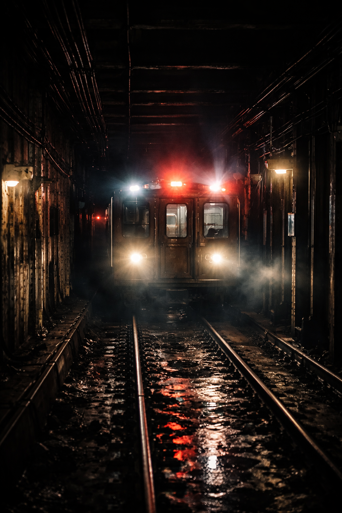
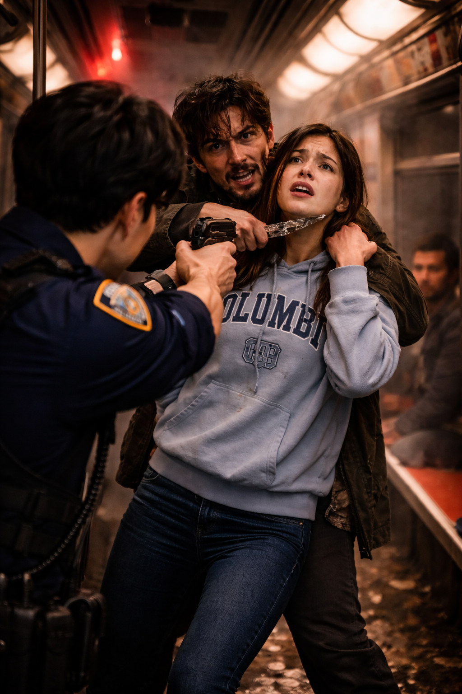
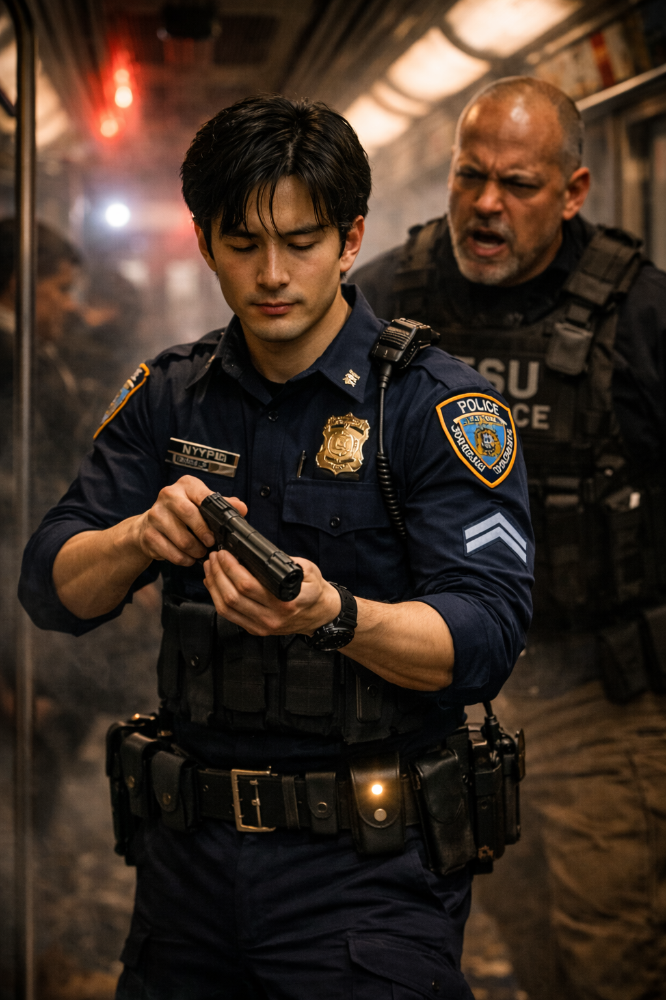
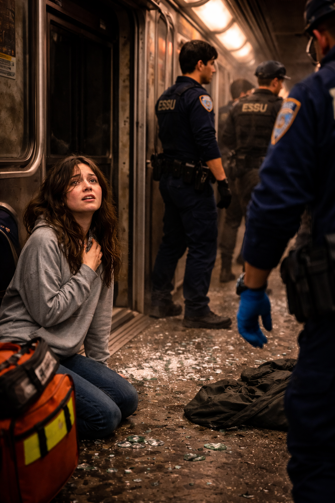
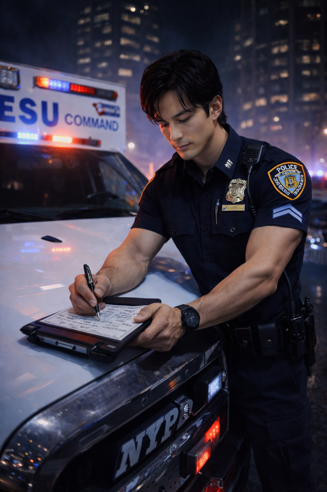
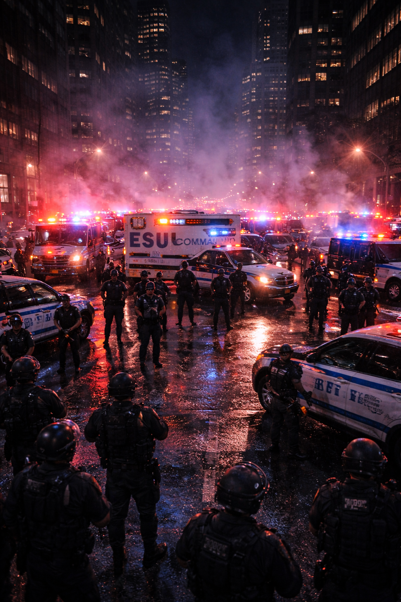
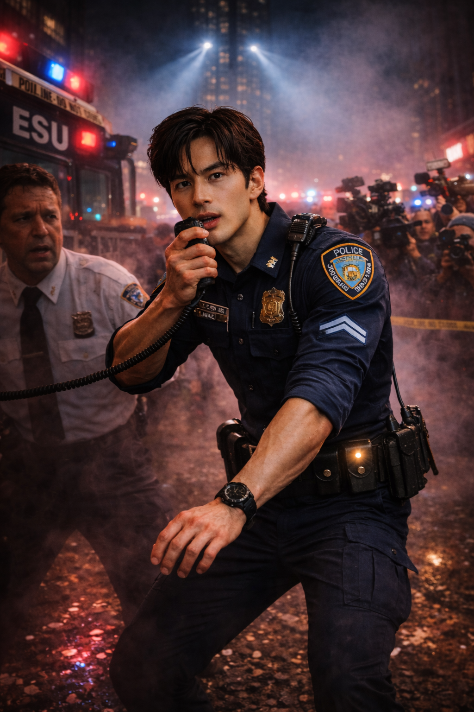
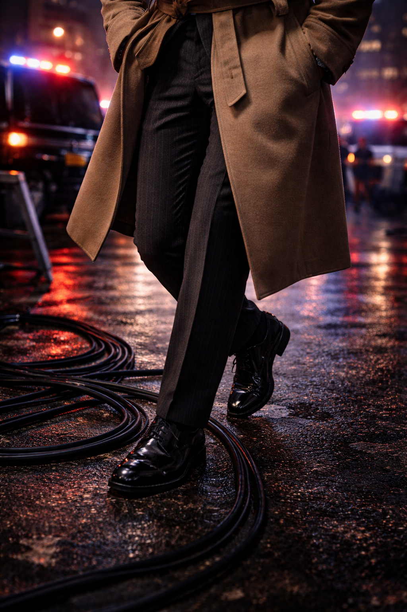
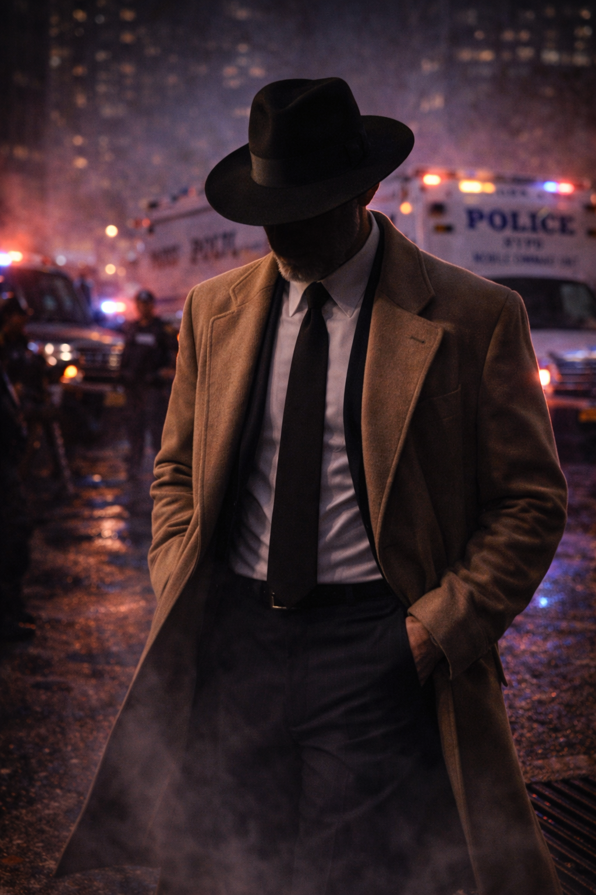
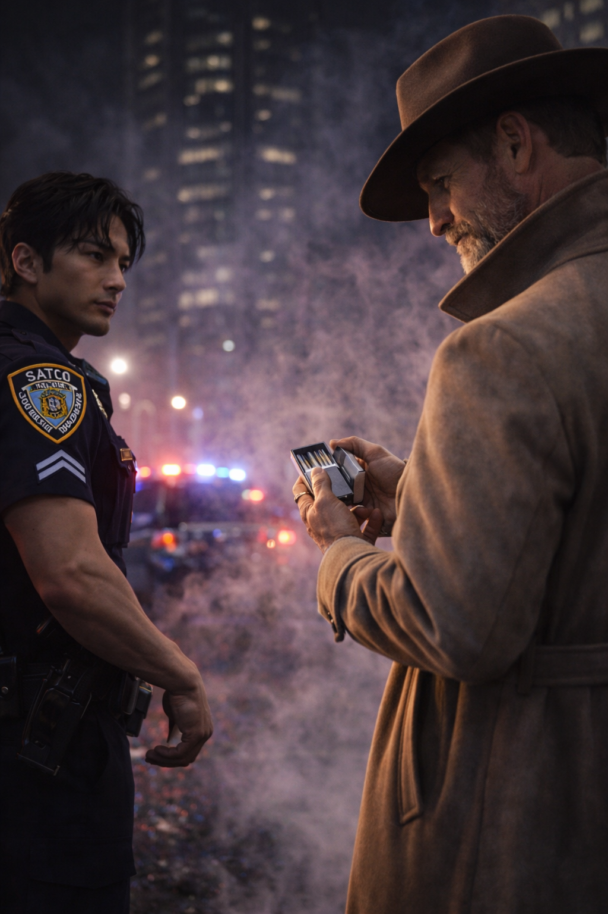

NYPD’s Choice
Precision · Discipline · Control
The Shark of Wall Street · Dossier
Captain NYPD — The Surgeon


The tunnel between 28th and 33rd Street was pitch black, lit only by the frantic strobe lights of the stalled subway car. The air smelled of ozone, burnt rubber, and high-voltage panic.
NYPD was just a Sergeant then, standing on the gravel tracks in standard response gear. Inside the third car, a manic suspect — high on a new synthetic drug called “Red Ice” — was holding a jagged piece of glass to the throat of a Columbia student. He wasn’t just holding her; he was vibrating. Chemical rage.
“Command, we have no angle. The suspect is shielding his body with the girl. Too much movement. If I take the shot, I hit her. I repeat, I cannot take the shot.”
NYPD was standing ten feet away. He didn’t look at the suspect’s face. He didn’t look at the terrified girl. He looked at the rhythm of the twitch.
Twitch. Pause. Twitch. Pause.
The suspect’s head jerked to the left every time he screamed. The gap between the girl’s jugular and the suspect’s shoulder was exactly three inches. But the window of opportunity was only 0.8 seconds.
NYPD turned off his radio. He didn’t want the noise. He closed his eyes. In the chaos of the tunnel — the screaming passengers, the shouting cops, the radio chatter — NYPD found a pocket of absolute silence.
Inhale for four. Exhale for four.

This was Mushin. No Mind. The state where thought stops and action begins.
He opened his eyes. He raised his rifle. He didn’t aim; he simply pointed.
Twitch. Pause.
CRACK.
The sound was deafening in the enclosed tunnel. The suspect’s head snapped back violently. He dropped instantly, a clean hole through his right eye socket. The jagged glass fell from his hand. The hostage was untouched.

The ESU Commander stormed over, furious, grabbing NYPD by the vest. “Who gave the order? Who took that shot? You could have killed her!”
NYPD engaged the safety. He checked the chamber. He looked at the Commander with eyes that were terrifyingly empty.
“I did, sir. The math worked.”
That was the day he stopped being a Sergeant and started being “The Surgeon.”
Chaos is a disease. NYPD was the cure.

Five years later, NYPD stood outside the Obsidian Tower. The chaos on the street was deafening. Sirens wailed, ESU trucks idled with heavy diesel rumbles, and the strobing red and blue lights turned the wet asphalt into a kaleidoscope of panic. The perimeter was collapsing. The media was pushing in. The patrol officers were terrified.
NYPD grabbed the radio from a shaking Lieutenant. He didn’t ask for control; he took it.
“I want the perimeter locked! Nothing comes out of that tower larger than a rat! Do you copy? If it moves, you box it. If it breaches, you drop it.”
“Captain.”
It wasn’t a shout. It was a drawl. Slow. Heavy. Like tires rolling over gravel.

NYPD turned. Standing by the open doors of the command truck was a man who looked like he had walked out of a different century. Polished wingtip brogues, two-tone, stepping carefully over a coil of power cables. Pinstriped trousers with a razor-sharp crease. A beige cashmere trench coat, belted tight. He wore a wide-brimmed fedora, the kind they hadn’t sold in New York since 1945, the brim casting a pitch-black shadow over everything above his chin.
“Who the hell are you?”
“Name’s Miller.”

The man reached into his coat. Every cop nearby flinched, hands going to their holsters. Miller didn’t draw a gun. He drew a silver cigarette case. He snapped it open, the sound sharp and metallic.
“I’m the consultant the Mayor called. I’m the janitor, Captain. I clean up messes you boys don’t have a mop for.”

He walked past NYPD, ignoring the perimeter line, moving toward the tactical map laid out on the hood of the SWAT van. He moved with a lazy confidence that infuriated NYPD.
“We have a suspect trapped on the 90th floor. We’re sending in Alpha Team with flashbangs and tear gas. We do this by the book.”
Miller laughed. It was a dry, humorless sound. “Flashbangs.” He shook his head, the fedora tilting left.
“Son, you send men up there with flashbangs, you’re sending them to be slaughtered in the dark. That thing up there? It ain’t a junkie holding up a liquor store.”

Miller pointed a gloved finger at the blueprint of the 98th floor. “That’s a Class-One Synthetic. He don’t breathe, so your gas is useless. He sees in thermal, so your smoke is useless. And he processes threat assessment faster than your boys can pull a trigger.”
“Kill the power,”
Miller said. “Cut the hardlines. No Wi-Fi. No radio. You make that building deaf, dumb, and blind.”
“That kills our comms too. We lose tactical advantage.”
“You use hand signals. And you trade those Kevlar vests for ceramic plates. He uses an Arc Cutter. It’ll slice through Kevlar like a hot knife through butter.”

Miller finally lit the cigarette. The flame of the lighter illuminated only his jawline — square, unshaven, scarred — before he snapped the lid shut, plunging his face back into darkness.
“You send your team up there to trap him. But you don’t engage. You flush him out.”
“Flush him out to where?”
Miller gestured to the street, to the exact spot where he was standing. “To me. I brought my own iron.”
He patted the left side of his trench coat. The heavy, distinct outline of a Thompson submachine gun bulged beneath the fabric.

“Now,”
Miller said, walking away from the camera toward the tower entrance, a silhouette against the blinding police lights. “Y’all might want to stand back. This is gonna get loud.”
Precision Kit · Scene Objects